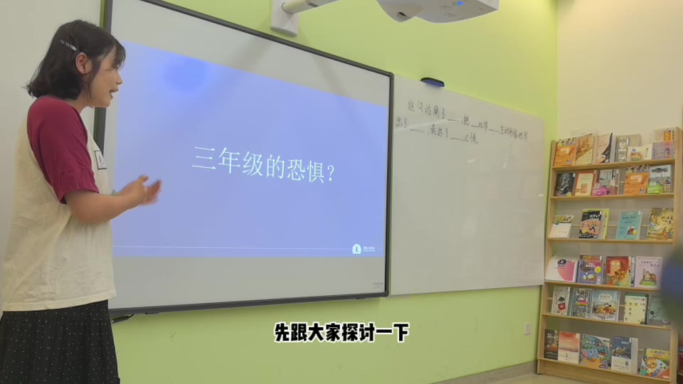
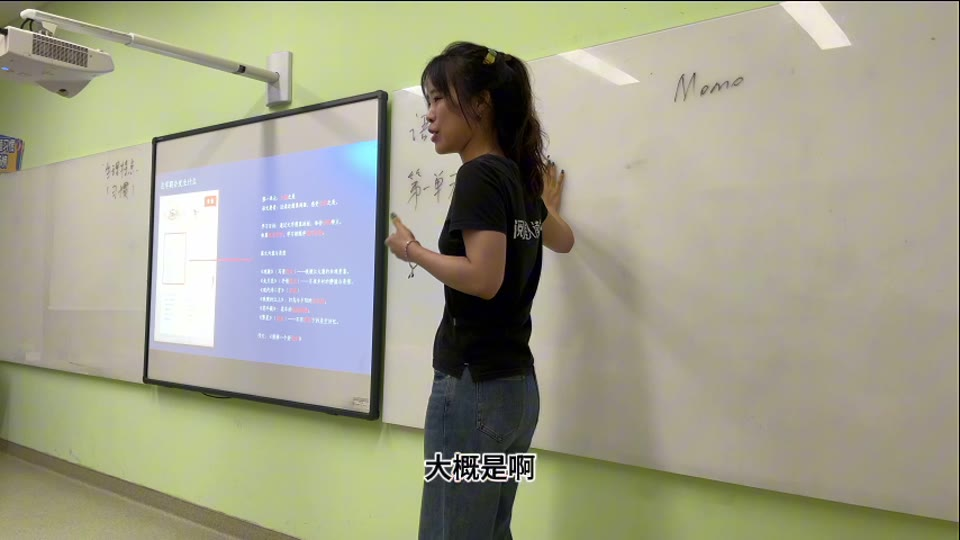

小学 · 二升三
2 升 3 家长会录像
围绕三年级学习变化、语文能力培养、整本书阅读、正式写作训练和作业安排展开。
- 阅读理解与文体变化
- 答题表达与写作启蒙
- 效率、思考和学习习惯
阅星人 · 家长沟通资料
这里整理了目前已经发布的家长会录像。请按孩子当前的学习阶段选择，每个页面都包含完整视频、家长速读和可点击的时间锚点。


按阶段查看
点击“直接观看”进入对应页面，时间锚点可以帮助家长快速找到最关心的话题。
围绕三年级学习变化、语文能力培养、整本书阅读、正式写作训练和作业安排展开。
介绍四年级语文的文体升级、概括与提问能力、做题习惯，以及孩子走向主动学习时的家校配合。
说明五年级语文的理解与表达升级、教材单元和课堂训练变化，以及孩子进入高年级后的自主学习与家庭支持。
讲解进入 L2 后阅读方式、文本难度、理解与表达要求、书面练习和家庭支持重点的变化。
从阅读连续性、课堂训练和课后积累出发，说明 L2 的学习升级，以及家长需要配合的四项重点。